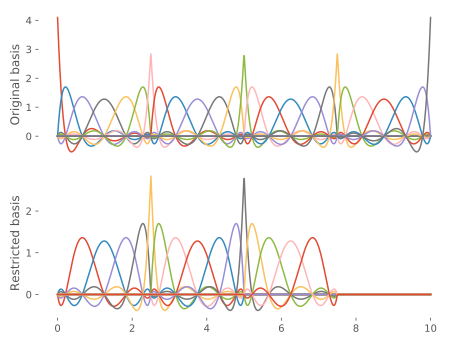

Overview
Evaluating basis functions
We can evaluate one or more basis functions at a single point or over a range of values:
julia> B = FiniteDifferences(10, 0.1)
Finite differences basis {Float64} on 0.0..1.1 with 10 points spaced by Δx = 0.1
julia> B[0.15,1]
0.5000000000000001
julia> B[0.15,1:3]
3-element Array{Float64,1}:
0.5000000000000001
0.4999999999999999
0.0
julia> B[0.0:0.05:1.1,:]
23×10 SparseArrays.SparseMatrixCSC{Float64,Int64} with 30 stored entries:
[2 , 1] = 0.5
[3 , 1] = 1.0
[4 , 1] = 0.5
[4 , 2] = 0.5
[5 , 2] = 1.0
[6 , 2] = 0.5
[6 , 3] = 0.5
[7 , 3] = 1.0
[8 , 3] = 0.5
[8 , 4] = 0.5
[9 , 4] = 1.0
[10, 4] = 0.5
[10, 5] = 0.5
[11, 5] = 1.0
[12, 5] = 0.5
[12, 6] = 0.5
[13, 6] = 1.0
[14, 6] = 0.5
[14, 7] = 0.5
[15, 7] = 1.0
[16, 7] = 0.5
[16, 8] = 0.5
[17, 8] = 1.0
[18, 8] = 0.5
[18, 9] = 0.5
[19, 9] = 1.0
[20, 9] = 0.5
[20, 10] = 0.5
[21, 10] = 1.0
[22, 10] = 0.5(Non-)Orthogonal bases
By orthogonal basis we mean those that have metrics[metric] with one diagonal only. The values on the diagonal can be different from unity (i.e. it may be an integration weight):
julia> B = FiniteDifferences(10, 0.1)
Finite differences basis {Float64} on 0.0..1.1 with 10 points spaced by Δx = 0.1
julia> S = B'B
10×10 Diagonal{Float64,Fill{Float64,1,Tuple{Base.OneTo{Int64}}}}:
0.1 ⋅ ⋅ ⋅ ⋅ ⋅ ⋅ ⋅ ⋅ ⋅
⋅ 0.1 ⋅ ⋅ ⋅ ⋅ ⋅ ⋅ ⋅ ⋅
⋅ ⋅ 0.1 ⋅ ⋅ ⋅ ⋅ ⋅ ⋅ ⋅
⋅ ⋅ ⋅ 0.1 ⋅ ⋅ ⋅ ⋅ ⋅ ⋅
⋅ ⋅ ⋅ ⋅ 0.1 ⋅ ⋅ ⋅ ⋅ ⋅
⋅ ⋅ ⋅ ⋅ ⋅ 0.1 ⋅ ⋅ ⋅ ⋅
⋅ ⋅ ⋅ ⋅ ⋅ ⋅ 0.1 ⋅ ⋅ ⋅
⋅ ⋅ ⋅ ⋅ ⋅ ⋅ ⋅ 0.1 ⋅ ⋅
⋅ ⋅ ⋅ ⋅ ⋅ ⋅ ⋅ ⋅ 0.1 ⋅
⋅ ⋅ ⋅ ⋅ ⋅ ⋅ ⋅ ⋅ ⋅ 0.1In contrast, a non-orthogonal basis such as B-splines has a banded metric:
julia> t = LinearKnotSet(5, 0, 1.0, 5)
14-element LinearKnotSet{5,5,5,Float64,StepRangeLen{Float64,Base.TwicePrecision{Float64},Base.TwicePrecision{Float64}}}:
0.0
0.0
0.0
0.0
0.0
0.2
0.4
0.6
0.8
1.0
1.0
1.0
1.0
1.0
julia> B = BSpline(t)
BSpline{Float64} basis with LinearKnotSet(Float64) of order k = 5 (quartic) on 0.0..1.0 (5 intervals)
julia> S = B'B
9×9 BandedMatrix{Float64,Array{Float64,2},Base.OneTo{Int64}}:
0.0222222 0.0139286 0.00347002 0.000365961 1.32275e-5 ⋅ ⋅ ⋅ ⋅
0.0139286 0.0331746 0.0246054 0.00747795 0.000811839 1.65344e-6 ⋅ ⋅ ⋅
0.00347002 0.0246054 0.0464947 0.0349662 0.0100953 0.00036737 9.79816e-7 ⋅ ⋅
0.000365961 0.00747795 0.0349662 0.0629159 0.0460378 0.00786712 0.00036737 1.65344e-6 ⋅
1.32275e-5 0.000811839 0.0100953 0.0460378 0.0860836 0.0460378 0.0100953 0.000811839 1.32275e-5
⋅ 1.65344e-6 0.00036737 0.00786712 0.0460378 0.0629159 0.0349662 0.00747795 0.000365961
⋅ ⋅ 9.79816e-7 0.00036737 0.0100953 0.0349662 0.0464947 0.0246054 0.00347002
⋅ ⋅ ⋅ 1.65344e-6 0.000811839 0.00747795 0.0246054 0.0331746 0.0139286
⋅ ⋅ ⋅ ⋅ 1.32275e-5 0.000365961 0.00347002 0.0139286 0.0222222where the bandwidth depends on the B-spline order.
For a review on non-orthogonal basis sets, and the complications they introduce, see e.g.
- Soriano, M., & Palacios, J. J. (2014). Theory of Projections with Nonorthogonal Basis Sets: Partitioning Techniques and Effective Hamiltonians. Physical Review B, 90(7), 075128. DOI: 10.1103/physrevb.90.075128, arXiv: 1404.2043
Restricted bases
Restricted bases are those where a subset of the basis functions have been selected:
julia> B = FEDVR(range(0, stop=10.0, length=5), 7)
FEDVR{Float64} basis with 4 elements on 0.0..10.0
julia> B̃ = B[:, 3:17]
FEDVR{Float64} basis with 4 elements on 0.0..10.0, restricted to elements 1:3, basis functions 3..17 ⊂ 1..25
It is common to drop the first and last elements to impose Dirichlet0 boundary conditions, but one could think of other examples, such as splitting the computation into overlapping chunks, etc.
The metric between differently restricted orthogonal bases is a BandedMatrix where the sole diagonal is offset:
julia> S = B'B̃
25×15 BandedMatrices.BandedMatrix{Float64,FillArrays.Fill{Float64,2,Tuple{Base.OneTo{Int64},Base.OneTo{Int64}}},Base.OneTo{Int64}}:
⋅ ⋅ ⋅ ⋅ ⋅ ⋅ ⋅ ⋅ ⋅ ⋅ ⋅ ⋅ ⋅ ⋅ ⋅
⋅ ⋅ ⋅ ⋅ ⋅ ⋅ ⋅ ⋅ ⋅ ⋅ ⋅ ⋅ ⋅ ⋅ ⋅
1.0 ⋅ ⋅ ⋅ ⋅ ⋅ ⋅ ⋅ ⋅ ⋅ ⋅ ⋅ ⋅ ⋅ ⋅
⋅ 1.0 ⋅ ⋅ ⋅ ⋅ ⋅ ⋅ ⋅ ⋅ ⋅ ⋅ ⋅ ⋅ ⋅
⋅ ⋅ 1.0 ⋅ ⋅ ⋅ ⋅ ⋅ ⋅ ⋅ ⋅ ⋅ ⋅ ⋅ ⋅
⋅ ⋅ ⋅ 1.0 ⋅ ⋅ ⋅ ⋅ ⋅ ⋅ ⋅ ⋅ ⋅ ⋅ ⋅
⋅ ⋅ ⋅ ⋅ 1.0 ⋅ ⋅ ⋅ ⋅ ⋅ ⋅ ⋅ ⋅ ⋅ ⋅
⋅ ⋅ ⋅ ⋅ ⋅ 1.0 ⋅ ⋅ ⋅ ⋅ ⋅ ⋅ ⋅ ⋅ ⋅
⋅ ⋅ ⋅ ⋅ ⋅ ⋅ 1.0 ⋅ ⋅ ⋅ ⋅ ⋅ ⋅ ⋅ ⋅
⋅ ⋅ ⋅ ⋅ ⋅ ⋅ ⋅ 1.0 ⋅ ⋅ ⋅ ⋅ ⋅ ⋅ ⋅
⋅ ⋅ ⋅ ⋅ ⋅ ⋅ ⋅ ⋅ 1.0 ⋅ ⋅ ⋅ ⋅ ⋅ ⋅
⋅ ⋅ ⋅ ⋅ ⋅ ⋅ ⋅ ⋅ ⋅ 1.0 ⋅ ⋅ ⋅ ⋅ ⋅
⋅ ⋅ ⋅ ⋅ ⋅ ⋅ ⋅ ⋅ ⋅ ⋅ 1.0 ⋅ ⋅ ⋅ ⋅
⋅ ⋅ ⋅ ⋅ ⋅ ⋅ ⋅ ⋅ ⋅ ⋅ ⋅ 1.0 ⋅ ⋅ ⋅
⋅ ⋅ ⋅ ⋅ ⋅ ⋅ ⋅ ⋅ ⋅ ⋅ ⋅ ⋅ 1.0 ⋅ ⋅
⋅ ⋅ ⋅ ⋅ ⋅ ⋅ ⋅ ⋅ ⋅ ⋅ ⋅ ⋅ ⋅ 1.0 ⋅
⋅ ⋅ ⋅ ⋅ ⋅ ⋅ ⋅ ⋅ ⋅ ⋅ ⋅ ⋅ ⋅ ⋅ 1.0
⋅ ⋅ ⋅ ⋅ ⋅ ⋅ ⋅ ⋅ ⋅ ⋅ ⋅ ⋅ ⋅ ⋅ ⋅
⋅ ⋅ ⋅ ⋅ ⋅ ⋅ ⋅ ⋅ ⋅ ⋅ ⋅ ⋅ ⋅ ⋅ ⋅
⋅ ⋅ ⋅ ⋅ ⋅ ⋅ ⋅ ⋅ ⋅ ⋅ ⋅ ⋅ ⋅ ⋅ ⋅
⋅ ⋅ ⋅ ⋅ ⋅ ⋅ ⋅ ⋅ ⋅ ⋅ ⋅ ⋅ ⋅ ⋅ ⋅
⋅ ⋅ ⋅ ⋅ ⋅ ⋅ ⋅ ⋅ ⋅ ⋅ ⋅ ⋅ ⋅ ⋅ ⋅
⋅ ⋅ ⋅ ⋅ ⋅ ⋅ ⋅ ⋅ ⋅ ⋅ ⋅ ⋅ ⋅ ⋅ ⋅
⋅ ⋅ ⋅ ⋅ ⋅ ⋅ ⋅ ⋅ ⋅ ⋅ ⋅ ⋅ ⋅ ⋅ ⋅
⋅ ⋅ ⋅ ⋅ ⋅ ⋅ ⋅ ⋅ ⋅ ⋅ ⋅ ⋅ ⋅ ⋅ ⋅- metricalso known as mass matrix, Gramian matrix, overlap matrix, etc.